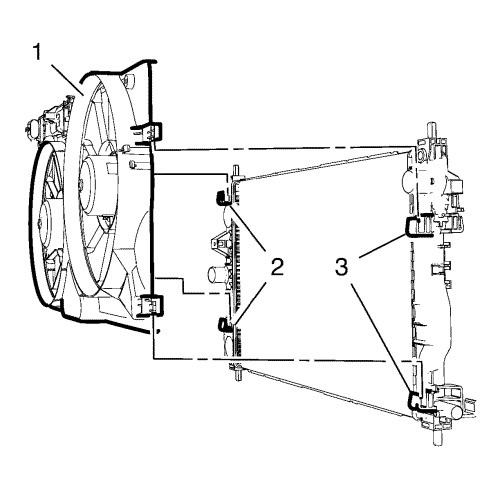
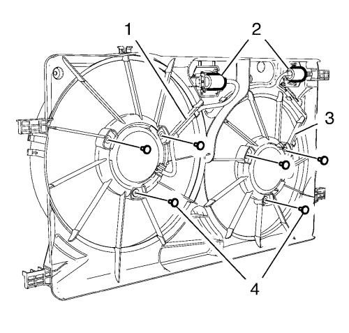

Orlando
Sustitución del ventilador del refrigerante del motor — 2.0L Diésel LNP
Procedimiento de desmontaje
Desconecte el cable negativo de la batería. Consultar
Desconexión y conexión del cable negativo de la batería
.
Desmonte el radiador. Consultar
Sustitución del radiador
:
1.8L 2H0 - Cambio automático
→
1.8L 2H0 - Cambio manual
.

Retire la cubierta del ventilador del motor (1) de los 4 clips del radiador (2) tirando hacia arriba.

Suelte los 2 mazos de cables del ventilador de refrigeración del motor (1, 3) de la cubierta del ventilador de refrigeración del motor.
Suelte los 2 conectores del ventilador de refrigeración del motor (2) de la cubierta del ventilador de refrigeración del motor.
Retire los 6 tornillos del ventilador del refrigerante del motor (4) de los 2 ventiladores de refrigeración del motor.
Retire los 2 ventiladores de refrigeración del motor de la cubierta del ventilador de refrigeración del motor.
Procedimiento de montaje
Monte los 2 ventiladores de refrigeración del motor en la cubierta del ventilador de refrigeración del motor.
Precaución:
Consulte
Precaución con las fijaciones
en la sección Prólogo.
Monte los 6 tornillos del ventilador de refrigeración (4) en los 2 ventiladores de refrigeración del motor y apriételos a
4 N·m (35 lib. pulg.)
.
Fije con clips los 2 conectores del ventilador de refrigeración del motor (2) en la cubierta del ventilador de refrigeración del motor.
Fije con clips los 2 mazos de cables del ventilador de refrigeración del motor (1, 3) en la cubierta del ventilador de refrigeración del motor.
Monte el radiador. Consultar
Sustitución del radiador
:
1.8L 2H0 - Cambio automático
→
1.8L 2H0 - Cambio manual
.
Conecte el cable negativo de la batería. Consultar
Desconexión y conexión del cable negativo de la batería
.
© Copyright Chevrolet. All rights reserved